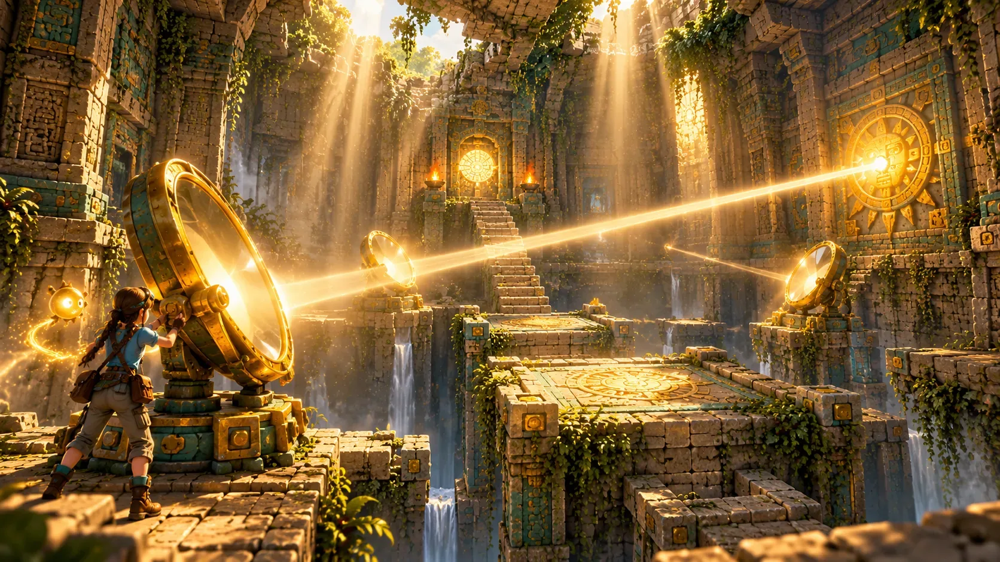

Chamber 1 · Tier III
The Memory Path
Repeat K'in's song on the stones, then cross a path only the Reader can see.

Home / UEFN Islands
Island 4 · Co-op escape rooms
Five puzzle chambers where one player can see what the others must do.
Five puzzle chambers recut from the temple's quietest and strangest halls, built so that no one can solve them alone.
Kaya frames it as a lesson: the Depths test those who read. At the start of each chamber one player takes K'in's Glyph Lens and becomes the Reader, looking down from a gallery that shows hidden glyphs, true floors and light paths. The others are the Climbers, the only ones who can work the mechanisms. The roles swap at every stage. The island shares its name with Tier V, where most of its rooms come from.
Five chambers
Chamber 1 · Tier III
Repeat K'in's song on the stones, then cross a path only the Reader can see.
Chamber 2 · Tier V
Aim bronze mirrors as a team while the sun shafts move.
Chamber 3 · Tier V
Tint and mix beams of light. One wrong mix floods the vault with fire.
Chamber 4 · Tier V
Two mirrored halls: each side sees the true floor of the other, never its own.
Chamber 5 · Tier V
Turn four totems to an order assembled from the glyphs of the first four chambers.
Replay
Each chamber awards up to three stars: one for finishing, two for beating par, three for beating par without hints. K'in offers three levels of hint per stage, from a nudge to the answer, and each one costs score.
After a first full clear, Remix gives every puzzle a new solution, so the rooms stay the same and the answers don't. Finishing all five unlocks Kaya's full translation of the Spirit Mural.